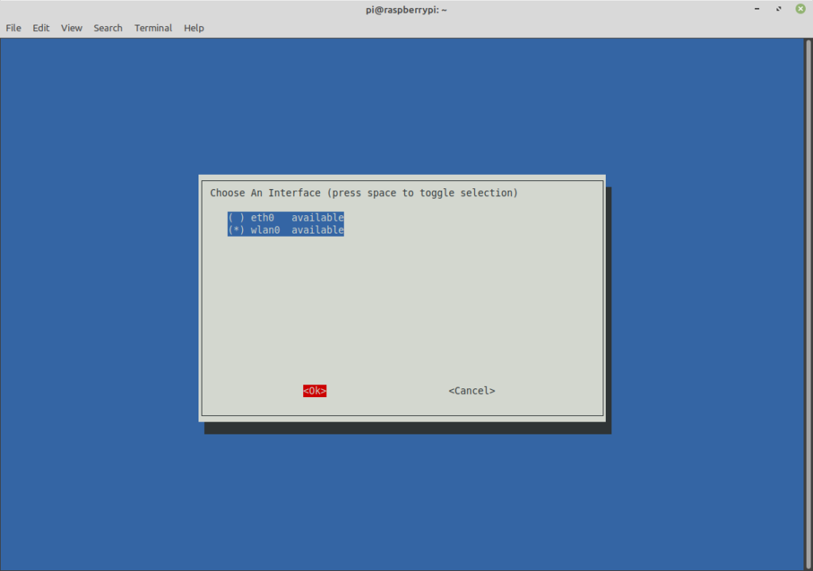
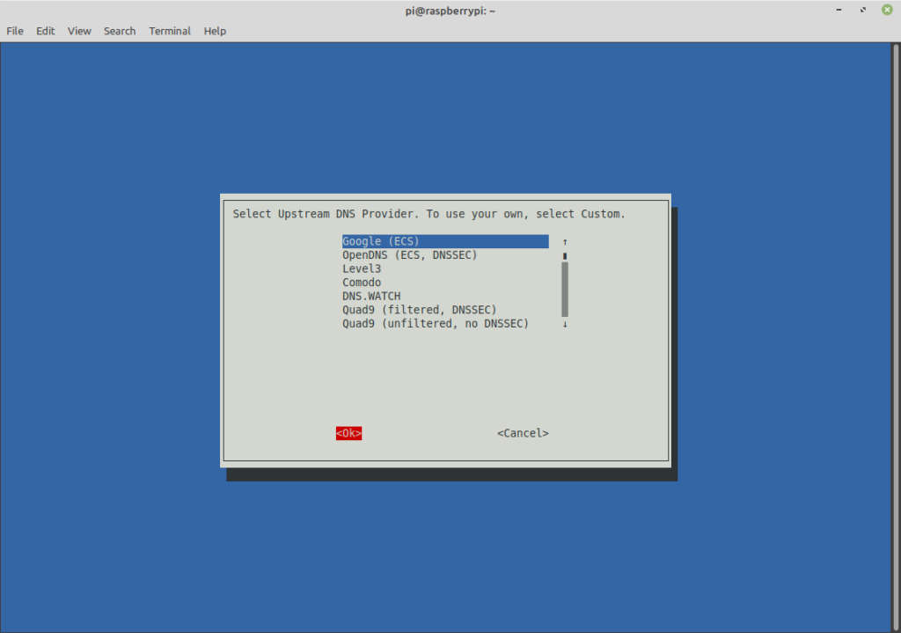
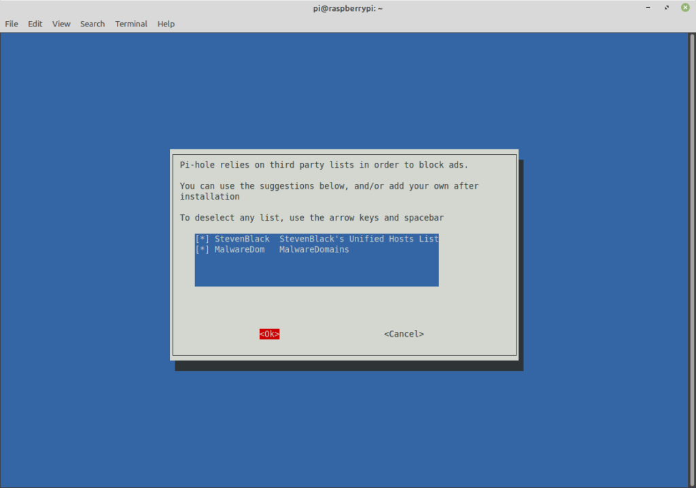
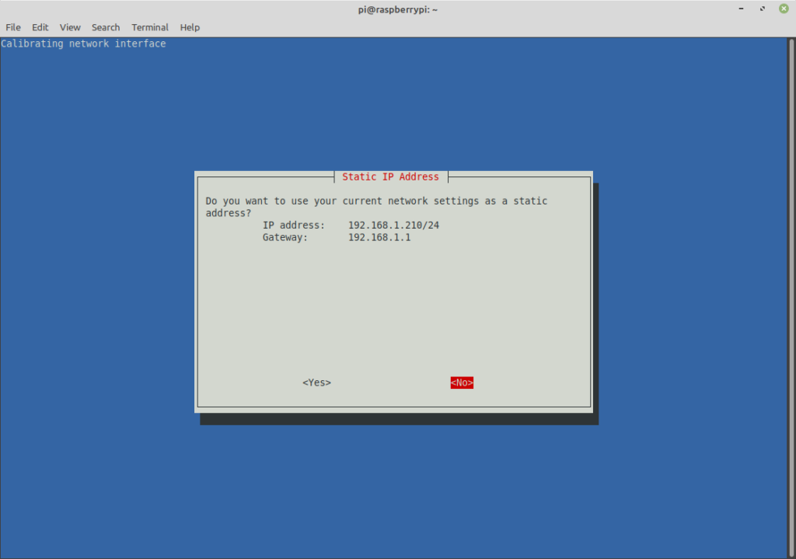
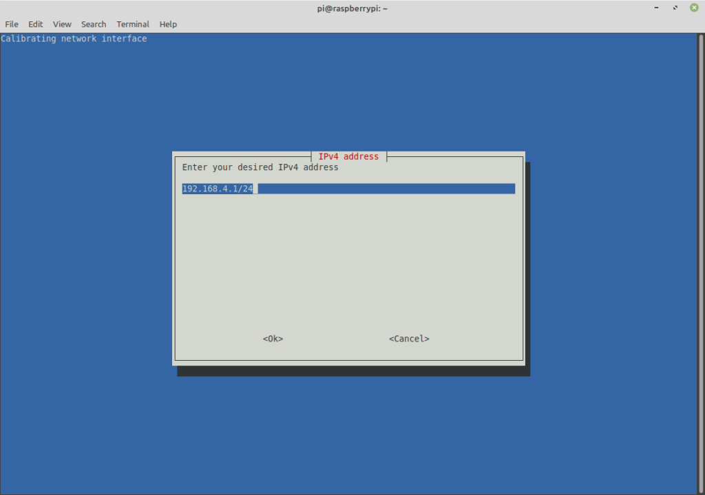
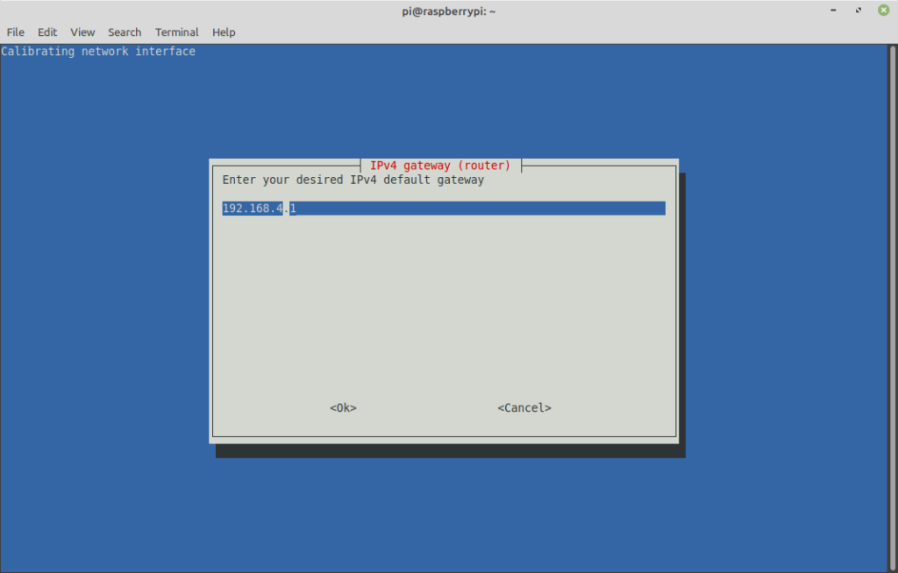
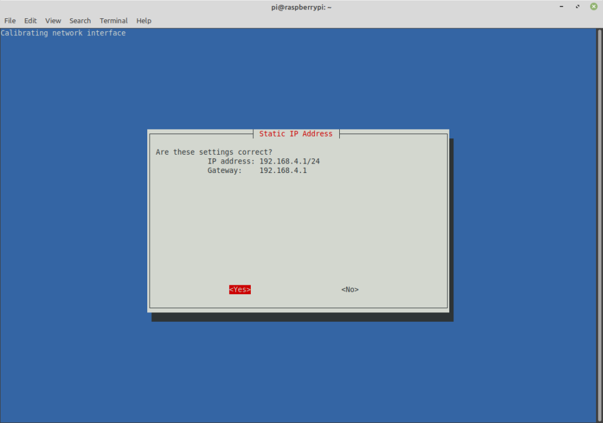
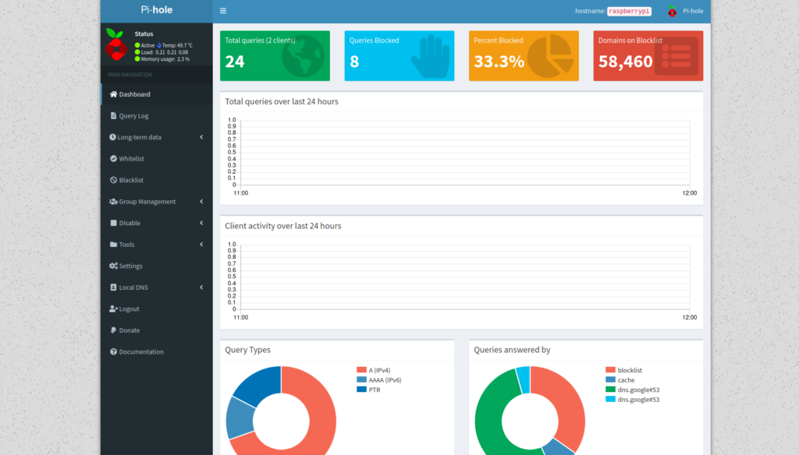
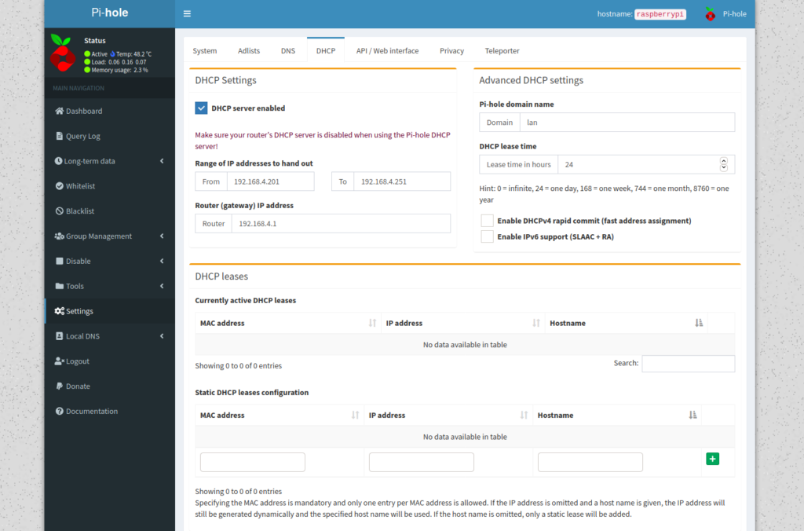
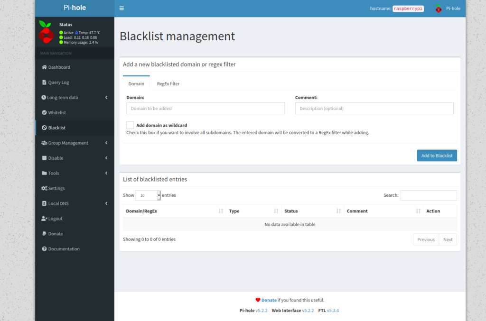

Installing Pi-Hole
This is the second part of the tutorial on setting up a Raspberry Pi router/filter (I assume you've done part 1). To set up the filter, we are going to be using Pi-hole.
Pi-hole is an excellent DNS filtering system. Or as some people call it, a black hole. Incoming or outgoing connections that are on the Pi's blacklist are simply dropped. Pi-hole is free, open source, and easy to use.
Installing Pi-Hole
Let's dive into this. First, download and install Pi-Hole: `sudo curl -sSL https://install.pi-hole.net | bash`.
Click "Ok" through the first few screens. When you come to the screen asking about network interfaces, choose `wlan0`:

On the next screen, it will ask about your DNS provider. I'm not sure how much it actually matters, so just go with Google (the default):

The next screen will ask you about ad blocking lists. That's another cool thing about Pi-hole; other than blocking domains of your choice, it can also block ads. By default, both are selected; you can just leave it as is.

The next screen will ask what protocols to use. You can just leave this as is.
The following screen will ask about the static IP address. **Answer no** here. As you remember, the Pi serves domains in the 192.168.4 range. Your home router takes care of the rest.

On the next screen, we specify that range:

The next screen asks about the gateway; this is simply the Pi's IP address:

Make sure the settings look like the image below. If so, you can continue.

Click through the next screen. The one after will ask if you want to install the web interface. Click yes to this. It will make it much easier to configure if you do so. The screen following will ask if you want to install lighttpd server. Click yes to this.
The next screen will ask about logging queries. I would say this depends on what you are trying to do. I would just leave it on by default, but if you have a reason not to, that is certainly okay. The web interface does require a password to login, so if you're the only one with the password... You're the only that can see. Actually, I think you change this setting later on through the interface. The screen afterward will ask what level of logging you wish.
When everything is complete, you will see a screen with some information. **Important**: Make sure you take note of the generated password near the bottom. You will need this to log in.
Pi-Hole Configuration
Okay, now go to `
http://192.168.4.1/admin`, click the login button on the left sidebar, and login. This is web interface for Pi-hole.

Once you're logged in, click on "settings" in the sidebar, and click on the DHCP tab. Check the box titled "DHCP server enabled". You can ignore the red flashing warning; you don't have to do anything to your home router. Nothing on your home network will be affected. **Make sure** to click save near the bottom.

At this point, you can start adding sites you want blocked. Click on the blacklist tab, and you should see a screen similar to below. When you add domains, one useful thing might be to add the domain, then add it again with that box "Add domain as wildcard" checked. This will prevent access to subdomains.

Blocking DNS Bypassing
This step is only necessary if you are trying to set this up as a parental control device. Remember the step where we chose our DNS server? In some cases, you can go around Pi-hole by changing this setting. The following commands will prevent this from happening and make sure that any requests go through the Pi.
sudo iptables -A PREROUTING -t nat -p udp --destination-port 53 -j REDIRECT --to-ports 53
sudo iptables -A PREROUTING -t nat -p tcp --destination-port 53 -j REDIRECT --to-ports 53
sudo iptables-save | sudo tee /etc/iptables/rules.v4
Clearing DNS Cache
In some cases, you may notice that sites are still not blocked even after blacklisting them. This occurs because of DNS caching. Your computer caches the corresponding IP addresses for a DNS lookup so it can avoid this extra step on future visits. Sometimes restarting will do the trick, but not always. At least on Linux. If you're on something other than Linux, you'll have to Google "How to flush the DNS cache for Windows". Or whatever you're on.
If you are on Linux, these commands should do the trick:
# This seems to work for Debian-based systems
# Run this:
sudo systemctl is-active systemd-resolved.service
# If the output of the last command was "active", run:
sudo systemd-resolve --flush-caches
##################
# On Redhat systems (including Fedora), one of these should work:
sudo systemctl restart nscd.service
sudo service nscd restart
##################
# If all else fails, try one of these:
sudo systemctl restart dnsmasq.service
sudo service dnsmasq restart
Final Notes
Once you are done with all the configuration, I would reboot just to be sure that all is working. You may have to reboot the Pi every now and then, but it shouldn't be too often- really just when you install updates. I ran mine 35 days straight before rebooting it for updates.
Conclusion
If all goes well, you should see the sites on your blacklist fail to load. Its easy to add new sites as needed. If you find any issues or have any suggestions, feel free to drop me an email.